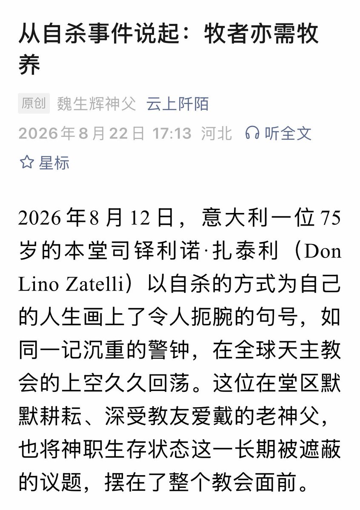

1713✝️❤️🔥
@sss_1713
以下是原文摘录部分：
“长期以来，在教会的话语体系中，我们更多强调司铎的“奉献”“牺牲”与“服务”，将其视为基督在世间的代表、教友灵魂的牧人，却常常有意无意地忽略了一个最基本的事实：司铎首先是具有脆弱性的“人”，同样需要情感的慰藉、心理的关怀与制度的保障。”

1713✝️❤️🔥
@sss_1713
已经数不清是今年看到的第几条关于司铎轻生的讯息了。圣召不会消除人的脆弱，即使作为牧者，也只是普通的人罢了。
“牧者亦需牧养” https://t.co/2GMttlXc9B https://t.co/Y20YtUQLVp